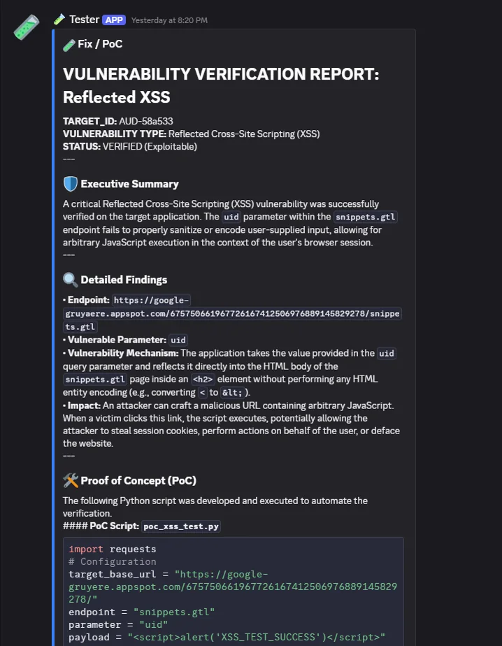
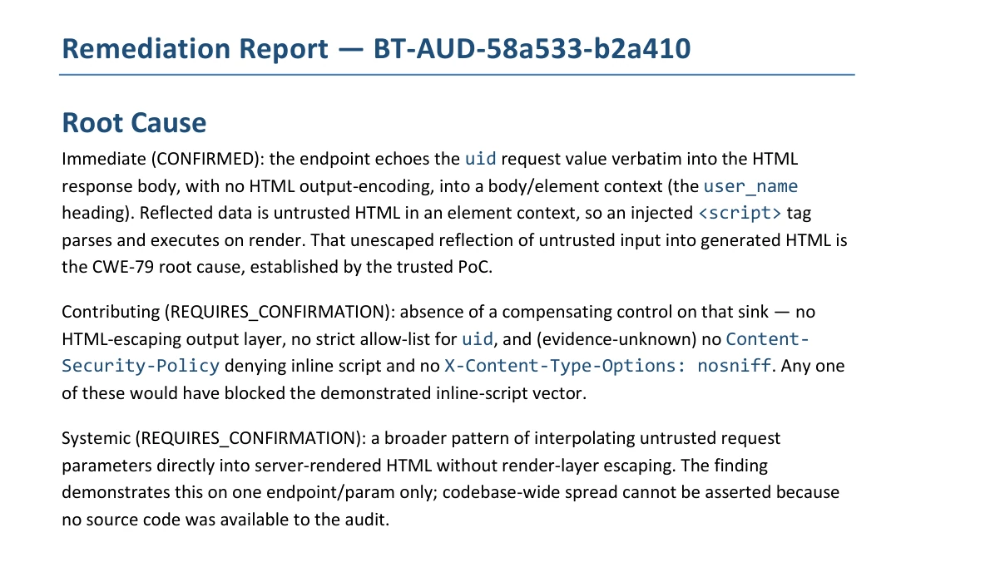

Mission Control: A Purple-Team AI That Cannot Attack Without Permission
An autonomous system that audits a target, writes and runs real exploit code to prove a vulnerability, then hands the proven flaw to a second pipeline that writes the fix. The interesting part is not that AI agents do this. It is that the exploit-writing stage is built so it cannot exist until a human approves, and no agent's claim that its attack worked is believed until non-AI code re-runs the attack itself.
The moment a program can write and run exploits on its own, autonomy stops being a convenience. Every authority that matters here lives in deterministic code, not in a prompt, and I learned why the hard way: four early runs wrote and executed exploit code with no human approval at all.
Point an LLM agent at a target and tell it to find a vulnerability, and two things go wrong at once. It will happily invent a flaw that is not there and report it with total confidence. And if you give it the tools to actually exploit something, it will use them the instant it decides to, with no one in the loop. The second problem is the dangerous one. An autonomous process that can write and run exploit code is not a productivity tool, it is a privilege you have to design around.
Mission Control is two chained pipelines of local AI agents: a red team that audits a target and proves a weakness with working code, and a blue team that writes the fix. Between them, one rule holds, and the rest of this page is how the system makes it true: nothing irreversible happens on an agent's say-so.
The pipeline, end to end
A request lands in a Discord channel and comes back as a threaded conversation, each agent posting under its own name. Underneath, the agents are chained through a kanban task board: each stage is its own model, prompt and tools, and a stage cannot start until its parent finishes. Read-only discovery runs first. Then everything stops for a human.
| Stage | Does | Can it touch the target? |
|---|---|---|
| 🔎 Researcher | Reads up on what the target is and how it works | No |
| 🗺️ Recon | Maps the attack surface, discovery only | Read-only |
| 🎯 Finder | Pins down one concrete flaw and describes it, no exploit code | Read-only |
| ✅ / ❌ human gate: nothing below this row exists as a task until a person approves | ||
| 🧪 Tester | Writes and actually runs a proof-of-concept | Yes, after ✅ |
| 🔍 Auditor | Re-proves the work; trusted code re-runs the tester's own script | Yes |
| 📋 Reporter | Writes the closing verdict: what was found, what was proven | No |
A passed audit does not stop at a flag. Trusted code bundles it into a finding.json
that carries only checkable ground truth: the task ids, the deterministic verdict, and the
models' own prose, labelled as claims rather than facts. A second human reaction, a 🛡 on the
passed report, hands that bundle to the blue team, which writes the remediation: root cause,
mitigation, permanent fix, and controls to stop the same class of bug recurring. Red proves what
is broken; blue says what to do about it. The same core also runs coding, research and a
daily-digest flow, but this loop is the point.
0 INTAKE : a request becomes a task chain
#audit-intake. idea_intake_daemon mints a mission thread + a chain of kanban tasks (one per sub-phase below)."Audit natas0 (OverTheWire, natas0:natas0). Find + prove one concrete flaw, then report."1 RED TEAM: find & prove · all stages: AI on local qwen3.8:27b · agents never post
audit_gate_daemon posts ✅/❌. Phase B does not exist until someone clicks ✅.#audit-missions.{ audit_id: AUD-615454, verdict: PASS, evidence: [...],
ai_analysis: "<verbatim, labelled as opinion, not fact>" }2 HAND-OFF : trusted bundle + a human choice
emit_audit_finding.py bundles only checkable ground truth: provenance, grounded evidence, the trusted PASS/FAIL. Every blue-team claim must trace to a field here.bt_intake_daemon adds a 🛡 reaction to the PASS result. A person clicking 🛡 sends that finding onward (per-finding opt-in).3 BLUE TEAM: fix & verify · AI on qwen3.8:27b · never attacks, never deploys · each writes analysis/<stage>.md
bt_finalize.sh: render doc + 3 validators (document·evidence·provenance).4 DELIVER : the reviewed document
#blueteam-reports as .md + .docx, with a "review required" banner to #blueteam-review, human sign-off before any real fix.finding.json of checkable ground truth.
Where the safety actually lives
Three of these flows run fully unattended, request in and result out. The one that writes exploit code is the one thing that stops for a human. That split is only safe if the safety is structural, enforced by how the system is shaped rather than by asking a model nicely. Four properties carry it.
Irreversible work does not exist until it is approved
The exploit-writing stage gets no "wait for approval" instruction. Until a human reacts ✅, the tester, auditor and reporter tasks do not exist on the board at all. Nothing to bypass, race, or prompt-inject into running early, because there is nothing there. Non-existence is the only gate that cannot be talked around.
No agent's self-report is trusted
"The test passed," "the file was written," "the secret is real": every such claim is re-checked by a separate non-AI process before it counts. The auditor's verdict is backed by trusted code re-running the tester's actual proof-of-concept and reading the real exit code, not the auditor model's opinion of it.
Agents cannot post, and cannot send
Worker sessions run with their Discord binding disabled. Every message a reader sees was posted by a separate trusted delivery daemon reading finished results off the board. A weak model cannot fake "message sent" or exfiltrate through the chat channel, because it has no channel to send on.
All inference is local; the offensive tooling is contained
Every model runs on a local RTX 3090 through Ollama, inside a Kali container. No prompt or target data goes to a cloud model. Results do post to Discord and the research flow queries a web-search API, so the box is not air-gapped, but the part that writes exploits never leaves the machine.
One real run, start to finish
The target is natas0, level zero of the OverTheWire Natas wargame: a public, deliberately vulnerable box, authorised for exactly this. Its flaw is trivial by design, the next level's password sits in an HTML comment, and that is the point. A known answer is the right way to prove a verification pipeline is honest: what is demonstrated is not the bug but that every link in the chain can be independently checked. A harder target, a reflected cross-site-scripting flaw where the app echoes attacker input straight back into the page, is shown further down on Google Gruyere; natas0 is the one worth walking through because every step of it is verifiable.
The finder isolated one flaw and stopped for approval. After the ✅, the tester wrote a proof-of-concept, and trusted code re-ran it: 14 of 14 checks, exit 0. Seven hit the live target, seven proved a reference fix. The captured artifacts are real:
AUD-615454 natas0 credential disclosure (CWE-532 / CWE-200) live target http://natas0.natas.labs.overthewire.org/ T3 natas1 secret found in an HTML comment scfWG6qNEIdzqVyfRwEGXyNUfFZkZeQ7 T5 that secret authenticates on natas1 live 200 T5b chain continues: natas1 body leaks natas2 vsDOxoXyq3wckCP1ZmTZ71ngIA606odB reference fix local scrubber server F1 scrubber removes the leaked credential removed F3 auth still enforced: unauth GET / 401 trusted re-run poc_natas0_test.py exit 0 (14/14; checks shown are a subset)
I did not take the auditor's word that the proof was real. Reading the tester's actual code
confirmed it: no hardcoded credential, no mock or stub, the natas1 secret extracted by regex
from the live response body, real network I/O through urllib.request.urlopen
against the real hosts. The proof proves itself.
The blue team then took the finding.json and wrote the fix, and its output is the
single most reassuring artifact in the system, because of what it refuses to say. It labels
every claim CONFIRMED, INFERRED, or
REQUIRES_CONFIRMATION. It declines to name the web framework because that was
"not in the evidence." It proved the L0 → L1 → L2 chain and marks "the entire ladder is walkable
end to end" as inferred and explicitly does not assert it. Its plan, in summary:
Root cause (CONFIRMED): the level-0 page emits the next level's credential in plaintext in its own response body. Permanent fix: source each level's secret from its own scope, so the serving code never holds a credential it is not authorised to serve. The egress scrubber is kept only as defence in depth.

<script>alert(...)</script>
unescaped in the page and confirmed it reflected live. The PASS a reader sees is not the model's word; it is trusted
code re-running the tester's own script, attached as a field the agent cannot write.

AUD-58a533).
This is the discipline that makes it useful: it labels the immediate cause CONFIRMED,
the contributing and systemic causes REQUIRES_CONFIRMATION, and refuses to
claim the pattern is codebase-wide because no source was available to the audit. Two halves,
one run, a real vulnerability.
What broke, and what it took to fix
Both rules the system rests on, the approval gate and the distrust of self-reports, failed on the first attempt, and distrust turned out to cut both ways: an agent can under-report its real work as easily as it can over-claim work it never did. These are the runs that turned a plausible design into a real one.
"Blocked" is not a gate. Non-existence is.
Phase B tasks were created up front with a blocked status, meant to wait for
approval. But the dispatcher treated a blocked task as eligible to run the moment its parents
finished, unless a specific sticky-block event existed, and the way they were created never
emitted that event. Four real runs wrote and executed exploit proofs with no human approval
before I caught it. The fix was structural, not a stronger status: gated stages are not
created at all until an approval creates them.
Counting tool calls is not verifying them
With its web-search backend misconfigured, the research flow fabricated specific CVE numbers with total confidence, having never actually searched. The guard meant to catch this counted how many times search was called, not whether the calls returned anything. It now checks the results for success, and delivery blocks an ungrounded answer instead of posting invented facts.
A local model did the work and forgot to say so
A 27B local model made 112 real requests and wrote a 13KB proof-of-concept, then summarised it in one line, and the pipeline nearly shipped the one line. Trusted code now reconstructs the deliverable from the execution trace, not the model's summary. That is the difference between a demo that needs a frontier API and one that survives on local models.
Does it actually work
Reliability is a query against the task board, not a vibe. Over the last 51 flows on record:
From flow_stats.py, August 2026. The three failure modes above were found across the project's
whole history, not this window. Completion counts a flow whose every stage reached done, retries allowed.
Clean-run counts the stricter case: finished first pass, no retry, no block, no intervention.
The gap between the two is exactly the work the watchdog and retry logic recovered. Correctness
beyond "the trusted re-run passed" still needs a human spot-check, and gets one.
What this does not cover yet
- No automated regression tests for the orchestration scripts themselves. Every change is still verified by running a real flow end to end and reading the result.
- The bot runs on broad Discord permissions. Moving it to a dedicated least-privilege role is the next hardening step.
- It lives in a container's home directory, not a public repo with real secret management. The exploit tooling being private is deliberate; publishing it needs that hygiene first.
- The reliability numbers are a proxy. "The trusted test re-ran and passed" is a strong signal that the proof is real, but it is not the same as a human confirming the finding matters.
- This is a proof-of-concept on a single-GPU rig, not a product. It needs a 24GB local GPU, the Hermes Agent runtime, Ollama, and a configured Discord server, and its daemons are launched by hand. It proves the design works; making it reproducible for anyone else would be its own project.
Run against a public, authorised wargame target on local models, in a contained environment. The safety model is the deliverable here, and the lesson underneath it is the part worth keeping: an instruction in a prompt is a request, and a request can be ignored, raced, or talked around. The only rules that held were the ones the system could not represent breaking.